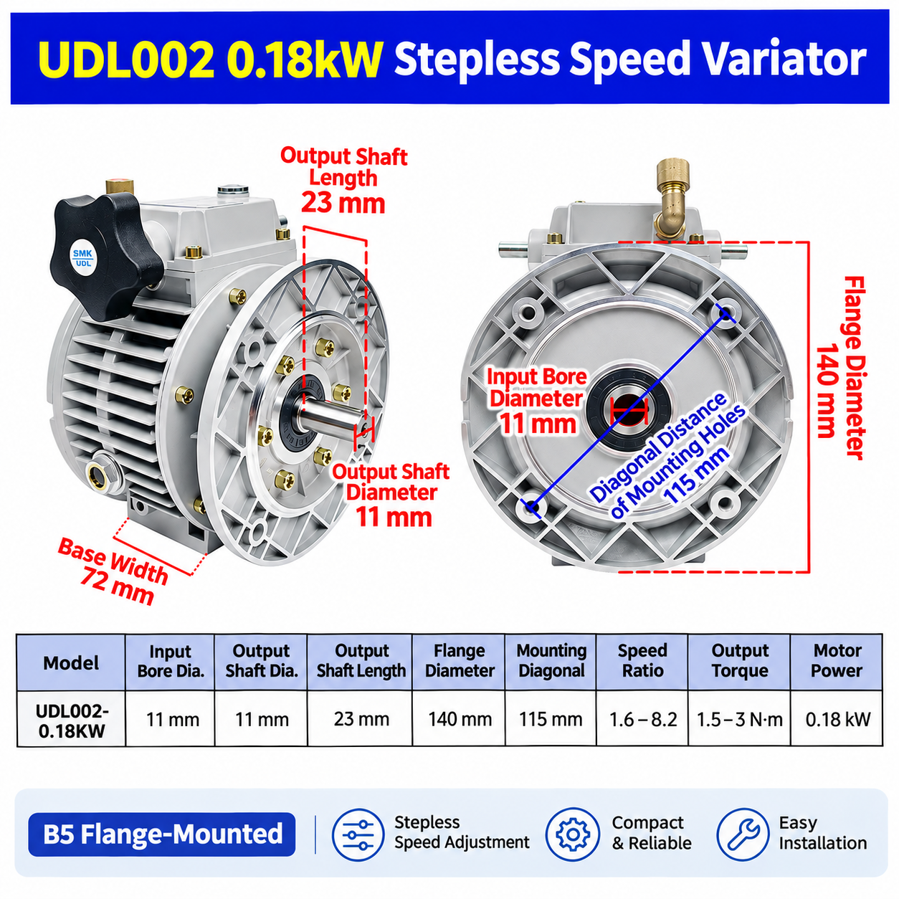

UDL002 0.18 kW Specifications
The following figures are taken from the supplied UDL002 specification drawing. They are useful for an initial replacement or mounting-compatibility check, but final selection should include the required duty and load.
| Parameter | UDL002 specification |
|---|---|
| Model | UDL002 |
| Motor power | 0.18 kW |
| Speed ratio | 1.6–8.2 |
| Output torque | 1.5–3 N·m |
| Input bore diameter | 11 mm |
| Output shaft diameter | 11 mm |
| Output shaft length | 23 mm |
| Flange diameter | 140 mm |
| Mounting-hole diagonal distance | 115 mm |
| Base width | 72 mm |
How Does the UDL002 Speed Variator Work?
The UDL002 uses a mechanical speed-adjustment system. Turning the adjustment handwheel changes the output speed within the specified range, without changing gears. This makes it suitable where the operator needs flexible mechanical speed adjustment within the unit's stated limits.
Where Can UDL002 Be Used?
The UDL002 can be considered for light-duty industrial equipment where adjustable speed is required, such as small conveyor systems, packaging machines, feeding equipment and other light industrial machinery. Actual suitability depends on the required speed, load and torque.
For a complete adjustable-speed drive, review the UDL/UD mechanical speed variator range. If your project combines a variator with a reducer, see the NMRV worm gearbox range and the motor-to-gearbox matching guide.
What Motor Is Suitable for UDL002?
UDL002 is designed for a 0.18 kW electric motor. Before ordering, confirm the motor shaft size, mounting flange and required output speed. For a replacement project, compare the original variator dimensions with the 11 mm input bore, 140 mm flange and 115 mm mounting-hole diagonal shown above.
When the motor is specified separately, review the electric motor options and provide voltage, frequency and mounting information with your inquiry.
Frequently Asked Questions
What is the UDL002 output torque?
The supplied specification lists 1.5–3 N·m. Check the actual load and operating duty before confirming the model.
What flange does the UDL002 use?
The illustrated UDL002 configuration is B5 flange-mounted and shows a 140 mm flange diameter with a 115 mm mounting-hole diagonal distance.
Can UDL002 be used as a replacement?
It may be considered when motor power, shaft and bore sizes, mounting dimensions, required speed range and load are compatible. Compare the existing nameplate and drawing before ordering.
Can SMK supply other speed variator sizes?
SMK supplies UDL/UD mechanical speed variators and related worm gear reducers, gear motors and electric motors. Share the required power, speed range, torque and mounting arrangement for model confirmation.